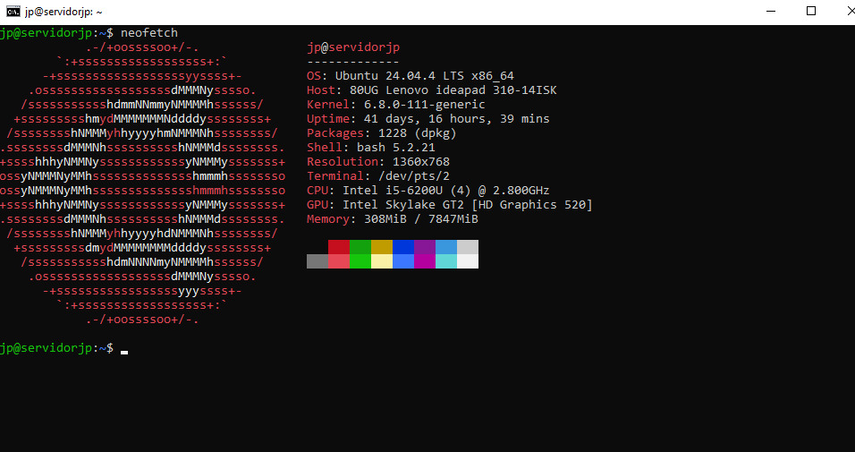

Servidor Linux
Ubuntu Server que administro para hospedar sites, aplicações e experimentos. É onde roda o UmSpotQualquer.
Ubuntu ServerNginxSSHDNS
O que aprendi
Hospedagem
Publicar aplicações e sites próprios.
Administração Linux
Gerenciar usuários, permissões e serviços.
Nginx
Configurar virtual hosts e proxy reverso.
Segurança
Acesso remoto seguro com SSH.
DNS
Gerenciar domínios e roteamento.
Galeria

